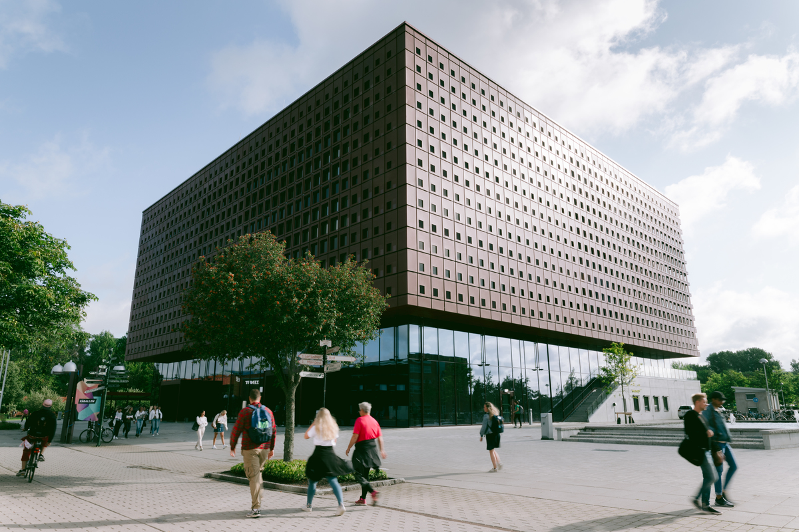

2022 IEEE SPS - EURASIP summer school on “Defining 6G: Theory, Applications, and Enabling Technologies”
Technical Description
With 5G being a reality, what will 6G be? Extensive discussions have been initiated around possible paradigm shifts and new technologies for 6G in recent years. With this summer school, we aim at providing a comprehensive roadmap about fundamental theory, emerging applications, and possible enabling technologies for 6G. The summer school consists of both application-domain talks with a high-level overview of key elements and practical aspects of 6G systems, and in-depth technical lectures focusing on theoretical aspects of emerging research directions. The lectures are organized around several key components of current 6G research trends, including the intersection between Artificial Intelligence (AI) and wireless communications, cyber-physical systems, semantic communications, Internet of Things (IoT) and massive access, integrated space-air-ground systems, mmWave and Terahertz communication, integrated sensing and communication, and security and trustworthiness of 6G systems.
|  | DatesAugust 29-September 1, 2022 Form of EventFully in-person, but with recording of all talks and lectures LocationCampus Valla, Linköping University, Sweden |
Organizing Committee
General Co-chairs:
Erik G. Larsson, Linköping University, Sweden
Petar Popovski, Aalborg University, Denmark
TPC Chair:
Zheng Chen, Linköping University, Sweden
Keynote Chair:
Nikolaos Pappas, Linköping University, Sweden
Industry Chair:
Matti Latva-Aho, University of Oulu, Finland
E-mail: ieee6gsummerschool@gmail.com
A flyer for the school can be found here.
Registration and administrative information
Non-IEEE SPS member: 625 EUR (including 25% VAT)
IEEE SPS member: 125 EUR (including 25% VAT)
An additional discount of 25 EUR applies to EURASIP members.
To register please follow this link
Lecturers/Speakers
Technical lectures
Monday, August 29
10:30 - 12:00: 5G PHY in retrospect, massive MIMO, D-MIMO and RIS in the 6G context
Speaker: Erik G. Larsson, Linköping University, Sweden14:30 - 16:00 IoT connectivity, massive access and URLLC
Speaker: Petar Popovski, Aalborg University, Denmark
Tuesday, August 30
10:30 - 12:00: Towards reliable, robust, and efficient AI for communications
Speaker: Osvaldo Simeone, King’s College London, UK14:30 - 16:00: Incorporating physical layer security in 6G: why it is needed and how we will do it
Speaker: Arsenia Chorti, ENSEA, France
Wednesday, August 31
10:30 - 12:00: Goal-oriented and semantic communications
Speaker: Nikolaos Pappas, Linköping University, Sweden14:30 - 16:00: mmWave and Terahertz communications
Speaker: Fredrik Tufvesson, Lund University, Sweden
Thursday, September 1
10:30 - 12:00: Distributed intelligence over wireless networks
Speaker: Zheng Chen, Linköping University, Sweden14:30 - 16:00: Positioning, Sensing, and Wireless Power Transfer
Speaker: Klaus Witrisal, Graz University of Technology, Austria
Application-domain talks
Monday, August 29
13:00-14:00: IoT on the road to the sustainable development goals: vehicle or bandit
Speaker: Liesbet Van der Perre, KU Leuven, Belgium
Tuesday, August 30
13:00-14:00: Industrial control and automation
Speaker: Karl H. Johansson, KTH, Sweden
Wednesday, August 31
13:00-14:00: Implementational aspects of 6G transceivers
Speaker: Aarno Pärssinen, University of Oulu, Finland
Thursday, September 1
13:00-14:00: Integrated satellite-terrestrial communications
Speaker: Ana Isabel Pérez-Neira, Universitat Politècnica de Catalunya, Spain
Acknowledgment
We would like to kindly acknowledge the support by the IEEE Signal Processing Society and the European Association for Signal Processing (EURASIP).
Gold Sponsors
 |